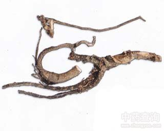

土人参

拼音
Tǔ Rén Shēn
别名
栌兰、飞来参、瓦参、桃参、申时花
来源
为马齿苋科土人参属植物锥花土人参Talinum paniculatum （Jacq.）Gaertn.[T. patens （L.）Willd.;T. crassifolium auct. non Willd]，以根和叶入药。秋、冬季挖根洗净、切片晒干；叶则随时可采，或秋季采集，晒干或蒸后晒干备用。
生境分布
常为栽培，亦有野生于山坡岩石缝中。我国陕西、江苏、安徽、浙江、江西、福建、台湾、湖北、湖南、广西、广东、四川、贵州、云南等省区均有之。
药材特点
多年生常绿草本，高达60厘米。根粗壮，有时多分枝，旁生纤细的侧根，全体肉质，表面棕褐色，内部乳白色。茎直立，下部分枝，基部稍木质化。单叶互生，叶片肉质，倒卵形或倒卵状长椭圆形，长5～7厘米，宽2.5～3.5厘米，先端尖或钝圆，基部渐次狭窄而成短柄，全缘，两面绿色而光滑。夏季开淡紫红色小花，集成顶生或测生疏散的圆锥花序，多呈二歧分枝。萼片2，卵形；花瓣5，倒卵形或椭圆形；雄蕊15～20个；雌蕊子房上位，球形，1室，柱头3深裂。朔果近圆球形，熟时灰褐色。种子细小，多数，黑色，有突起。
性状
干燥根呈圆锥形，直径1～3厘米，长短不等，有的微弯曲，下部旁生侧根，并有少数须根残留。肉质坚实。表面棕褐色，断面乳白色。
性味
甘，平。
功能主治
补中益气，润肺生津。用于气虚乏力，体虚自汗，脾虚泄泻，肺燥咳嗽，乳汁稀少。
用法用量
0.5～1两。
化学成分
无化学成分数据
药理作用
1：无药理作用数据
摘录
《全国中草药汇编》